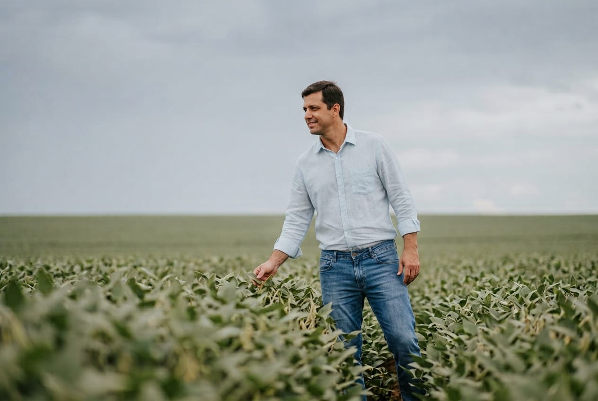
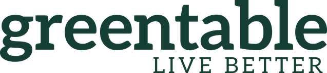

ShellBox Empresas
Saiba como simplificamos as jornadas de gestores de frota e motoristas em um ecossistema digital B2B.
- Ano
- 2022
- Tipo
- Produto digital
Carregando a página
Portfolio
Produtos e serviços digitais desenhados entre 2022 e 2024, em contextos de energia, indústria, agronegócio, saúde, alimentação e educação. Alguns têm case aberto; outros estão sob acordo de confidencialidade.
06 projetos
Saiba como simplificamos as jornadas de gestores de frota e motoristas em um ecossistema digital B2B.
Redesenhando a jornada digital do colaborador através da Intranet da Honda Brasil.

O desafio de conduzir a equipe de Design no redesenho da homepage do e-commerce comprar.yara.
Validando hipóteses de negócio no contexto do comércio digital de saúde através do Design e da experimentação.

Integrando em um ecossistema os serviços digitais voltados para alimentação de qualidade.
Repensando a experiência de inscrições de alunos e vestibulandos e o design do site de uma instituição de ensino renomada.